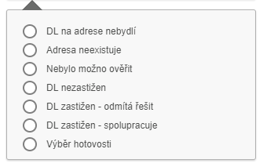

Zápis z OSN
Na základě osobní návštěvy tato funkce umožní uživateli vložit do systému průběh a hlavně výsledek osobní návštěvy. Průběh má přesně nadefinovaný postup a na něj navazují jednotlivé procesy.
Při obdržení spisu se předpokládá 1. OSN na MAIN adresu, IP může změnit.
Postup zadávání se neliší pro první, tak i pro opakovanou osobní návštěvu u dlužníka. Vyplnění informací je volitelné, kde je povinné, tam je tato informace zvýrazněna u pole zadávání. Zápis se skládá z jednotlivých akcí, které navazují na sebe podle následujícího vývojového diagramu.

Při schůzce může dojít k sedmi možným variantám výsledku.

Pro každou vybranou variantu jsou předdefinované kroky, které umožní v rychlém sledu zadat všechny potřebné informace.
Akční tlačítko je nepřístupné, pokud není vybrán žádný spis či více spisů.